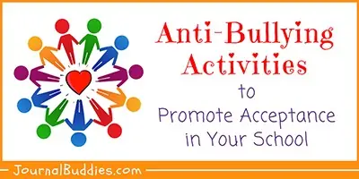

Anti-Bullying Educational Activities
-
https://www.classcraft.com/blog/anti-bullying-activities-teachers-students/
The website created by Classcraft provides four activities for teachers to try with their students.
-

https://www.journalbuddies.com/teaching-activities/anti-bullying-activities/
This website provides teachers with a series of unique anti-bullying activities, which targets at elementary school students, middle school students, and high school students.